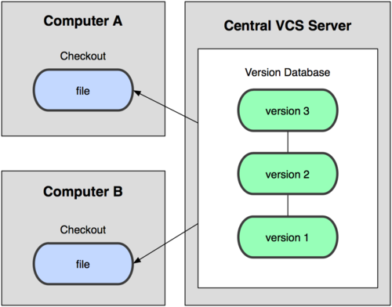
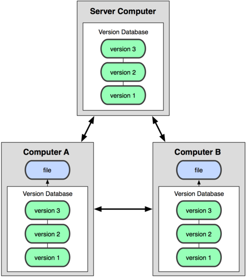

Intro to Git
Distributed Version Control
Scott Becker, Dev Tools / Jive Apps Framework
About Version Control
- Record changes to file(s)
- Compare changes over time
- Revert to a previous state
1.0: DIY Version Control
- Simply copy files into another directory (bonus: timestamped)
- Easy to screw up:
- forget which directory you're in
- accidentally write over or copy the wrong file
2.0: Local Version Control
- RCS: Still distributed today
- Keeps patch sets (differences between files)
- Re-create what any file looked like by adding up all the patches
2.0: Local Version Control
 All local, all the time
All local, all the time
3.0: Centralized Version Control
- Subversion: Still widely used
- Addresses need to collaborate with others
- Single server contains all versioned files
- All clients check out files from that single place
3.0: Centralized Version Control
 One server, one repository, many clients, many checkouts
Centralized Disadvantages
- Single point of failure
- Entire history in a single place
- Server down? Can't make commits or share changes
- Disk corruption without proper backups? Lose all history
4.0: Distributed Version Control
- Git, Mercurial, Bazaar, Darcs
- Clients don't check out just the latest snapshot
- Each checkout is a full mirror of the repository
- If a server dies, any client repository could be used to restore
4.0: Distributed Version Control
 One repository per client or server
Distributed Advantages
- Flexible: Many possible workflows possible
- No Single Point of Failure
- Work Offline
History of Git
- 2002-2005: Linux kernel used a proprietary DCVS called BitKeeper
- 2005: Relationship between BitKeeper and community broke down
- Linux community (starting with Linus Torvalds) created their own tool
Goals of Git
- Speed
- Simple design
- Strong support for non-linear development
(1000s of parallel branches) - Fully distributed
- Able to handle large projects, such as the Linux Kernel
Basics of Git
- Snapshots, not differences
- Nearly every operation is local
- Git has integrity (checksums)
- Git generally only adds data
Three file states
- Committed - latest version is stored
- Modified - latest version is different
- Staged - latest version is different, and marked to go into the next commit
Three main sections in repo
- Git directory - Git's metadata and database - the repository
- Working directory - Single checkout of one version of the project
- Staging area - Stores information about what will go in your next commit
Basic Git Workflow
- Modify files in your working directory
- Stage the files for commit
- Do a commit - takes the files as they are in the staging area and stores a snapshop permanently in Git

Installing Git
# Redhat / Fedora
$ yum install git-core
# Debian / Ubuntu
$ apt-get install git-core
# Mac OS X
http://code.google.com/p/git-osx-installer
# Windows
http://code.google.com/p/msysgitFirst Time Setup
$ git config --global user.name "John Doe"
$ git config --global user.email johndoe@example.comGetting Help
Man Pages
$ git help <verb>
$ git <verb> --helpCloning an existing repository
$ git clone git@github.com:jivesoftware/jiverscripts.git
Cloning into jiverscripts...
remote: Counting objects: 399, done.
remote: Compressing objects: 100% (351/351), done.
remote: Total 399 (delta 163), reused 162 (delta 26)
Receiving objects: 100% (399/399), 968.16 KiB | 154 KiB/s, done.
Resolving deltas: 100% (163/163), done.
Creating a new repository
$ mkdir gitpreso
$ cd gitpreso
$ git init
Initialized empty Git repository in ~/gitpreso/.git/
$ git status
# On branch master
#
# Initial commit
#
nothing to commit (create/copy files & use "git add" to track)
Local Commands
Tracking new files
$ echo "This is a demo." > README
$ echo "puts 'Hi Jivers'" > say_hi.rb
$ git status
# On branch master
#
# Initial commit
#
# Untracked files:
# (use "git add <file>..." to include in commit)
#
# README
# say_hi.rb
nothing added to commit but untracked files present
(use "git add" to track)
$ git add README
$ git status
# On branch master
#
# Initial commit
#
# Changes to be committed:
# (use "git rm --cached <file>..." to unstage)
#
# new file: README
#
# Untracked files:
# (use "git add <file>..." to include in commit)
#
# say_hi.rb
$ git add say_hi.rb
$ git status
# On branch master
#
# Initial commit
#
# Changes to be committed:
# (use "git rm --cached <file>..." to unstage)
#
# new file: README
# new file: say_hi.rb
#
$ git commit -m 'initial commit'
[master (root-commit) 3c85a9a] initial commit
2 files changed, 2 insertions(+), 0 deletions(-)
create mode 100644 README
create mode 100644 say_hi.rb
$ git status
# On branch master
nothing to commit (working directory clean)
Stage modified files
$ echo "Another line." >> README
$ git status
# On branch master
# Changes not staged for commit:
# (use "git add <file>..." to update what will be committed)
# (use "git checkout -- <file>..." to discard changes in working directory)
#
# modified: README
#
no changes added to commit (use "git add" and/or "git commit -a")
$ git add README
$ git status
# On branch master
# Changes to be committed:
# (use "git reset HEAD <file>..." to unstage)
#
# modified: README
#
$ echo "Yet another line." >> README
$ git status
# On branch master
# Changes to be committed:
# (use "git reset HEAD <file>..." to unstage)
#
# modified: README
#
# Changes not staged for commit:
# (use "git add <file>..." to update what will be committed)
# (use "git checkout -- <file>..." to discard changes in working directory)
#
# modified: README
#
What the heck?!
- 1: Modified README
- 2: Staged README for commit
- 3: Modified README again, before commit
- Git tracks changes, not files. "git add" took a snapshot of README as it was at the time.
Skipping the Staging Area
$ echo "And another new line." >> README
$ git commit -am 'add and commit in one'
[master af695bc] add and commit in one
1 files changed, 3 insertions(+), 0 deletions(-)
Ignoring files
$ touch tmp.txt
$ git status
# On branch master
# Untracked files:
# (use "git add <file>..." to include in commit)
#
# tmp.txt
nothing added to commit but untracked files present
$ echo "tmp.txt" > .gitignore
$ git status
# On branch master
# Untracked files:
# (use "git add <file>..." to include in commit)
#
# .gitignore
nothing added to commit but untracked files present
$ git add .gitignore
$ git commit -m 'ignore tmp.txt'
Viewing Logs
$ git log
commit be4a5769174d9b085c804a3695c486dd5931f43a
Author: Scott Becker <scott.becker@jivesoftware.com>
Date: Thu Feb 24 22:03:38 2011 -0800
ignore tmp.txt
commit af695bce42aa0791190cee6e5524d97cd78a6f8f
Author: Scott Becker <scott.becker@jivesoftware.com>
Date: Thu Feb 24 21:54:18 2011 -0800
add and commit in one
commit 3c85a9a386de5aec0593367c9a461fc2c933cf7f
Author: Scott Becker <scott.becker@jivesoftware.com>
Date: Thu Feb 24 16:56:24 2011 -0800
initial commit
Moving/Renaming Files
$ git mv README README.txt
$ git status
# On branch master
# Changes to be committed:
# (use "git reset HEAD <file>..." to unstage)
#
# renamed: README -> README.txt
#
$ git commit -m 'renamed README to README.txt'
[master ca2e364] renamed README to README.txt
1 files changed, 0 insertions(+), 0 deletions(-)
rename README => README.txt (100%)
Removing files
$ git rm say_hi.rb
rm 'say_hi.rb'
$ git status
# On branch master
# Changes to be committed:
# (use "git reset HEAD <file>..." to unstage)
#
# deleted: say_hi.rb
#
$ git commit -m 'removed say_hi.rb'
[master d5f291b] removed say_hi.rb
1 files changed, 0 insertions(+), 1 deletions(-)
delete mode 100644 say_hi.rb
Remote Repositories
Jiverscripts on Github...
$ git clone git@github.com:jivesoftware/jiverscripts.git
Showing Your Remotes
$ cd jiverscripts/
$ git remote
origin
$ git remote -v
origin git@github.com:jivesoftware/jiverscripts.git (fetch)
origin git@github.com:jivesoftware/jiverscripts.git (push)
Adding a remote to existing repo
$ cd gitpreso
$ git remote add origin git@github.com:sbecker/gitpreso.git
$ git push -u origin master
Counting objects: 14, done.
Delta compression using up to 2 threads.
Compressing objects: 100% (11/11), done.
Writing objects: 100% (14/14), 1.23 KiB, done.
Total 14 (delta 2), reused 0 (delta 0)
To git@github.com:sbecker/gitpreso.git
* [new branch] master -> master
Branch master set up to track remote branch master
from origin.
Pushing to remotes
$ echo "So very fine." >> README.txt
$ git commit -am 'Added another line to readme.'
[master 7b443d8] Added another line to readme.
1 files changed, 1 insertions(+), 0 deletions(-)
$ git push origin master
Counting objects: 5, done.
Delta compression using up to 2 threads.
Compressing objects: 100% (3/3), done.
Writing objects: 100% (3/3), 337 bytes, done.
Total 3 (delta 1), reused 0 (delta 0)
To git@github.com:sbecker/gitpreso.git
d5f291b..7b443d8 master -> master
Pulling from remotes
$ git pull
remote: Counting objects: 5, done.
remote: Compressing objects: 100% (3/3), done.
remote: Total 3 (delta 1), reused 0 (delta 0)
Unpacking objects: 100% (3/3), done.
From github.com:sbecker/gitpreso
d5f291b..7b443d8 master -> origin/master
Updating d5f291b..7b443d8
Fast-forward
README.txt | 1 +
1 files changed, 1 insertions(+), 0 deletions(-)
Cheap branches
Local, fast, disposable
Create a branch
$ git checkout -b crazy_idea
Switched to a new branch 'crazy_idea'
$ echo "puts 'super fast code'" > super_fast.rb
$ git add super_fast.rb
$ git commit -m 'super fast refactor'
[crazy_idea 95e5afc] super fast refactor
1 files changed, 1 insertions(+), 0 deletions(-)
create mode 100644 super_fast.rb
OMG! Urgent fix needed to production!
$ git checkout master -b hotfix
Switched to a new branch 'hotfix'
$ echo "Fix issue." >> README.txt # pretend!
$ git commit -m 'fix issue'
[hotfix 0e1a30a] fix issue
1 files changed, 1 insertions(+), 0 deletions(-)
$ git checkout master
Switched to branch 'master'
$ git merge hotfix
Updating 7b443d8..0e1a30a
Fast-forward
README.txt | 1 +
1 files changed, 1 insertions(+), 0 deletions(-)
$ git branch -d hotfix
Deleted branch hotfix (was 0e1a30a).
$ git push
...
Continue with that crazy idea...
$ git checkout crazy_idea
Switched to branch 'crazy_idea'
$ # lets merge in that hotfix
$ git rebase master
First, rewinding head to replay your work on top of it...
Applying: super fast refactor
$ # we decide it works, passes tests, etc.. lets merge it in
$ git checkout master
$ git merge crazy_idea
Updating 0e1a30a..9a81c6c
Fast-forward
super_fast.rb | 1 +
1 files changed, 1 insertions(+), 0 deletions(-)
create mode 100644 super_fast.rb
$ git branch -d crazy_idea
Deleted branch crazy_idea (was 9a81c6c).
Just a sample...
- since they're fast and local, you use them more
- good practice - a branch per feature and/or JIRA issue
- easy multitasking and context switching
Subversion Integration
Use Git locally, Subversion upstream!
$ git svn clone http://svn.example.com/svn/repos/foo/apps
Initialized empty Git repository in /Users/scott.becker/Archive/Development/gitsvn/apps/.git/
W: Ignoring error from SVN, path probably does not exist: (160013): Filesystem has no item: '/svn/repos/!svn/bc/100/jaf/apps' path not found
W: Do not be alarmed at the above message git-svn is just searching aggressively for old history.
This may take a while on large repositories
W: Ignoring error from SVN, path probably does not exist: (160013): Filesystem has no item: '/svn/repos/!svn/bc/100/jaf/apps' path not found
W: Do not be alarmed at the above message git-svn is just searching aggressively for old history.
This may take a while on large repositories
r115752 = e0f1fbfe772264fdba470170256a97ba0cda347b (refs/remotes/git-svn)
A README
W: +empty_dir: demo
W: +empty_dir: example
W: +empty_dir: test
r115755 = c2af7679d48033febec49a9192830f78b7b2041b (refs/remotes/git-svn)
A test/openclient-js/test_gadget_feature.xml
A example/openclient-js/microblogs.xml
...
$ cd apps/
$ git log
commit e056e56329f235d91d1305299b0fdd63d58ee6ac
Author: author.name <author.name@c71dbd84-28fa-0310-abbe-db3d66cda40d>
Date: Tue Feb 22 22:49:24 2011 +0000
Made a change to foo.
git-svn-id: http://svn.jiveland.com/svn/repos/foo/apps@139257 c71dbd84-28fa-0310-abbe-db3d66cda40d
commit 19e95b883b532fb1ca1e77d54e0d47b6158cab91
Author: author.name <author.name@c71dbd84-28fa-0310-abbe-db3d66cda40d>
Date: Tue Feb 22 01:43:14 2011 +0000
Made a change to bar.
git-svn-id: http://svn.jiveland.com/svn/repos/foo/apps@139172 c71dbd84-28fa-0310-abbe-db3d66cda40d
Commit locally, push to SVN repo
$ vi README
...updated README file...
$ git commit -am 'updated README'
[master 62e6ea0] updated README
1 files changed, 1 insertions(+), 0 deletions(-)
$ git svn dcommit
Committing to http://svn.jiveland.com/svn/repos/foo/apps ...
M README
Committed r139636
M README
r139636 = 6cbe2cfc5d1d38e78f735ee26e67b3ef51aff379 (refs/remotes/git-svn)
No changes between current HEAD and refs/remotes/git-svn
Resetting to the latest refs/remotes/git-svn
Pulling in changes from SVN
$ ...made another change to README elsewhere
$ ...switch back to git-svn repo and pull in changes
$ git svn rebase
M README
r139638 = 11d9b1cbf27bb4807d743e93d13e987a3eefc79f (refs/remotes/git-svn)
First, rewinding head to replay your work on top of it...
Fast-forwarded master to refs/remotes/git-svn.
Wrapup
- Git is awesome
- You can start today, with SVN upstream
Not Covered, but totally exists:
- GUI tools (GitK, GitX, TortoiseGit)
- IDE Integration (IntelliJ, Eclipse, Textmate, everything else)
- Hosting: indepenedently, on GitHub, etc...
- Advanced Workflows